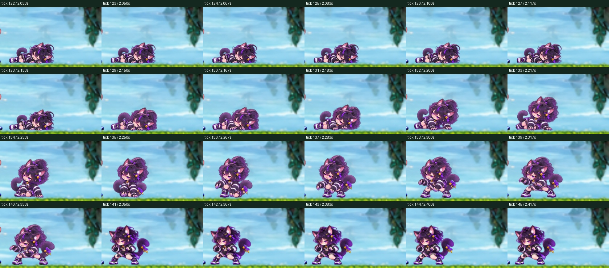

승인 전 시안 · 게임 원본은 보존됨
공격 → 연속 타격 → 다운 → 기상
중간 약공격은 24틱으로 연결하고 작은 수평 밀림을 유지합니다. 지상 마지막 타격 뒤 다운36틱과 기상 보호12틱을 적용합니다. 아래 두 영상은 같은 전투 코드에서 모션 시안 적용 전후를 비교합니다.
자현: 마지막 킥 전체 표시 크기 +12%. 나비: 다시 일어서는 중간 자세를 없앤 새 넘어짐16프레임과 누움→일어남을 연결하는 새 기상16프레임. 새 자산은 아직 런타임에 등록하지 않았습니다.
준비됨
자현 연계와 나비 피격·다운
나비 연계와 자현 피격·기상 회귀
좌우 반전 · 작은 크기
나비 다운→기상→대기 매 틱 비교

모션별 전체 프레임·재생 자료 · 독립 검토 기록
물리 Android 기기 검사는 미실행입니다. 영상은 Godot 실제 입력·지형·적중 계산을 사용한 macOS 검토 자료이며 기기 통과를 뜻하지 않습니다. 새 원화·표시 배율의 개별 승인과 필수 검토가 끝난 뒤 등록합니다.